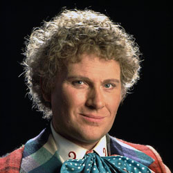

| Home | The Doctors | The Companions | The Villains |
|
|||
| cf
The Sixth Doctor  The Sixth Doctor is an incarnation of the Doctor, the protagonist of the BBC science fiction television series Doctor Who. He is portrayed by Colin Baker. Although his televisual time on the series was comparatively brief and turbulent, Baker has continued as the Sixth Doctor in Big Finish's range of original Doctor Who audio adventures. Within the series' narrative, the Doctor is a centuries-old Time Lord alien from the planet Gallifrey who travels in time and space in his TARDIS, frequently with companions. When the Doctor is critically injured, he can regenerate his body; in doing so, his physical appearance and personality change. Baker portrays the sixth such incarnation, a flamboyant man in brightly coloured, mismatched clothes whose brash and overbearing personality set him apart from all his previous incarnations. The Sixth Doctor appeared in three seasons. His appearance in the first of these was at the end of the final episode of The Caves of Androzani which featured the regeneration from the Fifth Doctor and thereafter in the following serial The Twin Dilemma, the end of that season. The Sixth Doctor's era was marked by the decision of the BBC controller Michael Grade to put the series on an 18-month "hiatus" between seasons 22 and 23, with only one new Doctor Who story, Slipback, made on radio during the hiatus, broadcast as 6 parts (at 10 minutes each) on BBC Radio 4 from 25 July to 8 August 1985, as part of a children's magazine show called Pirate Radio Four. Colin Baker had been signed up for four years,[1] as the previous actor Peter Davison had left after only three years. Prior to its postponement, season 23 was well advanced with episodes already drafted and in at least one case distributed to cast and production. Alongside "The Nightmare Fair", The Ultimate Evil", "Mission to Magnus", "Yellow Fever and How to Cure It", the remaining stories were still under development in a 25-minute episode format after the season was postponed. These were all dropped with the reconception of the season in mid 1985 in favour of a 14 episode story arc called The Trial of a Time Lord.[2] The Sixth Doctor also appeared in the special Dimensions in Time. There are alsonovels and audio plays featuring the Sixth Doctor, and the character has been visually referenced several times in the revived 2000s production of the show. |